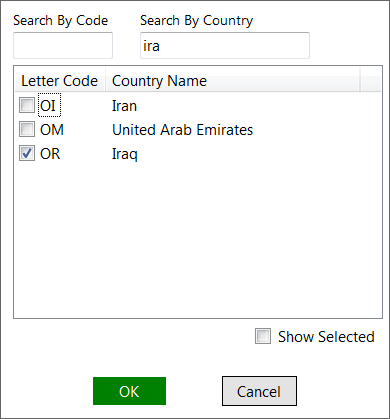
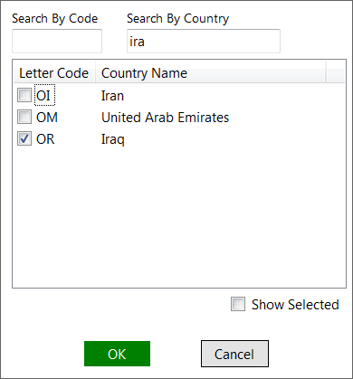

QSimPlanner Manual
Aircraft Config
From the aircraft configuration menu, you can add/edit/delete a profile.
After clicking "edit", various properties can be set. Fuel consumption, takeoff and landing profiles can be set to "None". However, if the fuel consumption profile is "None", that aircraft will not appear in fuel planning page. Takeoff/landing profiles are similar.


Flight planning
This is where the route planning and fuel calculation is done.
The route finder comes with a SID/STAR filter. There are 2 modes, blacklist and whitelist.


It's possible to avoid finding a route passing through certain countries.
 

The actions menu contains 4 items:
Find route
Automatically finds the shortest route between the two airports. The SID/STAR filters, avoided countries, and current oceanic tracks are taken into consideration.
Analyze route
Read the route text and analyze it. The allowed format is SID Waypoint Airway Waypoint ... Waypoint STAR.
The SID and STAR are optional. Any SID/STAR/Airway can be replaced with DCT(direct), AUTO(finds the route between the two waypoints automatically) or RAND(find a random track between the two waypoints). Note that the departure and arrival airports/runways need to be entered correctly. Also all DCT can be omitted.
For example, this route (from KLAS to KLAX) has correct format:
MCCRN4 WHIGG V21 HEC BASET3.HEC
We can let the route finder get the shortest path from WHIGG to HEC by replacing the airway with AUTO:
MCCRN4 WHIGG AUTO HEC BASET3.HEC
Or even let it find the SID for us:
AUTO HEC BASET3.HEC
Another example is a route from PANC to PHNL. We can use RAND to find a random track between waypoints, i.e. a series of latitude/longitude coordinates or waypoints.
ANCHO8 TED RAND ZIGIE KAENA2.ZIGIE
Or, if we do not know the SID and STAR to use, simply enter:
RAND
Click "Analyze Route" and then we get:
ANCHO8 TED 61N50 50N50 39N50 29N55 ZIGIE KAENA2.ZIGIE
Show map
Plot the route found or analyzed with Google Map.
Export
Export the route found or analyzed as a flight plan file, as set in options.
The advanced tool can find or analyze routes which are:
- From airport to airport
- From airport to waypoint
- From waypoint to airport
- From waypoint to waypoint